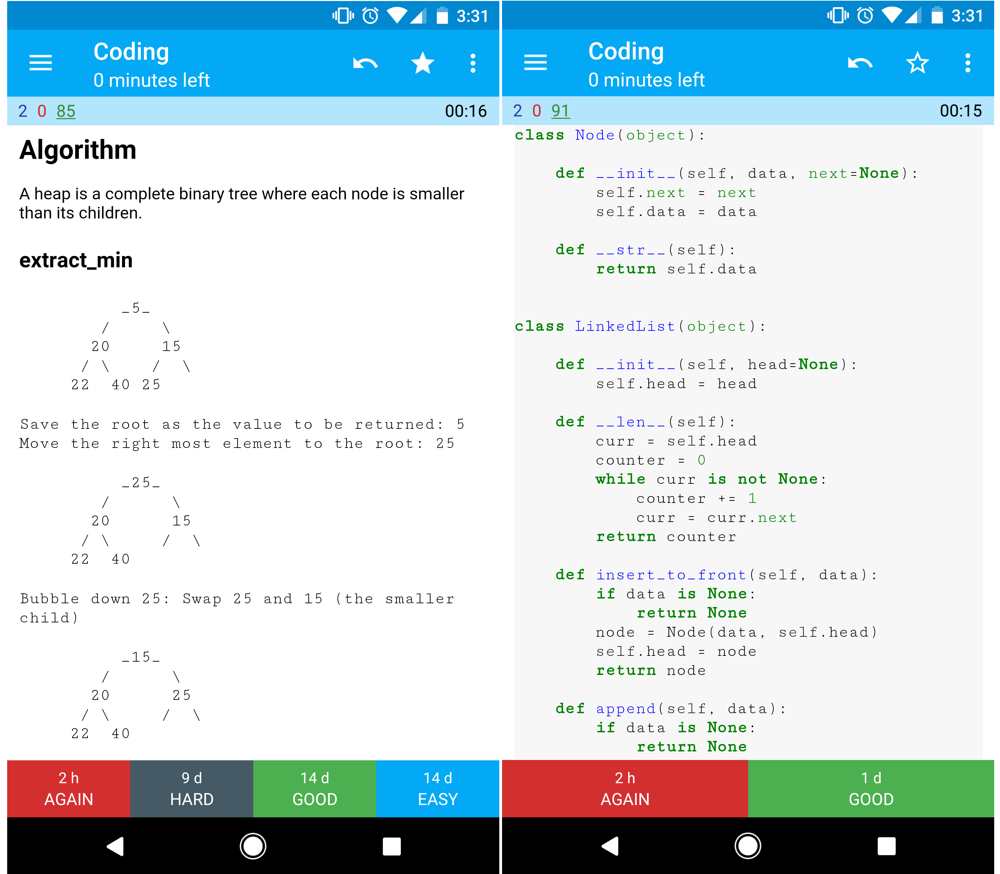
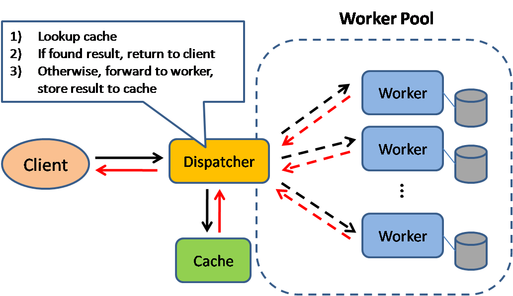
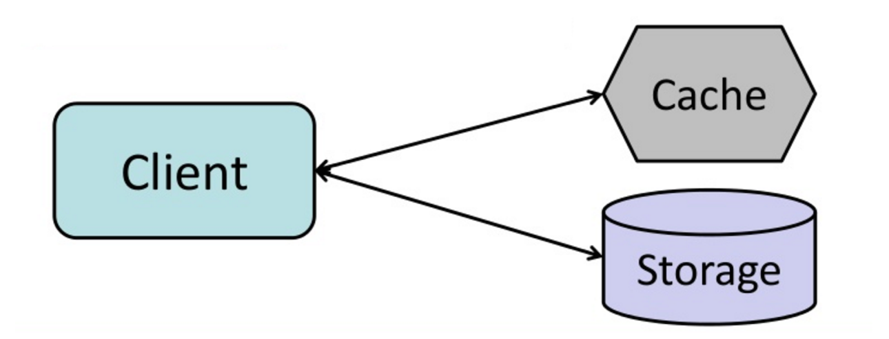

English ∙ 日本語 ∙ 简体中文 ∙ 繁體中文 ∙ العَرَبِيَّة ∙ বাংলা ∙ Português do Brasil ∙ Deutsch ∙ ελληνικά ∙ עברית ∙ Italiano ∙ 한국어 ∙ فارسی ∙ Polski ∙ русский язык ∙ Español ∙ ภาษาไทย ∙ Türkçe ∙ tiếng Việt ∙ Français | Add Translation
系統設計入門¶

動機¶
學習如何設計大型系統。
準備系統設計的面試。
學習如何設計大型系統¶
學習如何設計可擴展的系統會幫助你成為一個更好的工程師。
系統設計是一個廣泛的主題。在網路上，關於系統設計的資源也是不計其數。
本專案將許多資源進行分門別類，幫助你學習如何建構可擴展的系統。
從開放原始碼社群中學習¶
這是一個早期、持續不斷更新的開放原始碼專案。
任何貢獻 都相當歡迎！
準備系統設計的面試¶
除了程式的面試外，系統設計在許多科技公司的面試流程中都是必要的一環。
練習常見的系統設計問題，並且將你的設計結果和參考答案進行比對：討論、程式碼和圖表。
關於面試的其他主題：
學習單字卡¶

底下提供的學習單字卡以每隔一段時間間隔出現的方式，幫助你學習系統設計的概念。
這些是非常棒的學習資源，隨時都可以使用。
程式設計學習資源：互動式程式學習設計¶
你正在尋找資源來面對程式語言面試嗎？

請參考 互動程式語言學習挑戰，當中還包含了底下的學習單字卡：
如何貢獻¶
從社群中學習
隨時歡迎提交 Pull Request：
- 修正錯誤
- 改善章節內容
- 增加新的章節
- 翻譯
某些還需要再完善的章節放在 修正中。
請參考 貢獻指南。
系統設計主題的索引¶
底下是數個系統設計的主題，包含了優點及缺點。要記得，每一個系統設計的考量都包含著某種取捨。
每一章節都包含更深入資源的連結。

- 系統設計入門
- 動機
- 學習單字卡
- 如何貢獻
- 系統設計主題的索引
- 學習指南
- 如何解決一個系統設計的面試題目
- 系統設計面試問題與解答
- 物件導向設計面試問題與解答
- 系統設計主題：從這裡開始
- 效能與可擴展性
- 延遲與吞吐量
- 可用性與一致性
- 一致性模式
- 可用性模式
- 域名系統
- 內容傳遞網路(CDN)
- 負載平衡器
- 反向代理(網頁伺服器)
- 應用層
- 資料庫
- 快取
- 非同步機制
- 通訊
- 資訊安全
- 附錄
- 仍在進行中
- 致謝
- 聯絡資訊
- 授權
學習指南¶
基於你面試的時間 (短、中、長) 來複習這些建議的主題。

Q: 對於面試者來說，我需要知道這裡所有的知識嗎？
A: 不，如果是為了面試，你不需要知道這裡所有的知識。
在一場面試中，你會被問到什麼問題取決於以下幾點：
- 你有多少經驗
- 你的技術背景
- 你面試什麼職位
- 你面試什麼公司
- 你的幸運程度
越有經驗的面試者通常被期望瞭解更多系統設計的知識。如果是架構師或團隊負責人則被預期瞭解更多除了個人貢獻以外的知識。頂尖的科技公司通常也會有一次或多次的系統設計面試。
面試時，會很廣泛地展開，並在幾個特定領域深入探討。這裡會幫助你了解一些系統設計不同的主題，基於你面試的時間、經驗、職位和公司來調整你所需要涉獵的知識內容。
- 短期 - 以系統設計的廣度為目標。通過解決一些面試題目來練習。
- 中期 - 以系統設計的廣度和初級深度為目標。通過解決很多面試題目來練習。
- 長期 - 以系統設計主題的廣度和高級深度為目標。通過解決大部分面試題目來練習。
| 短期 | 中期 | 長期 | |
|---|---|---|---|
| 閱讀 系統設計主題的索引 來取得關於系統如何運作的廣泛知識 |  |
|
|
| 閱讀一些你要面試的 公司的工程部落格 文章 | |
|
|
| 閱讀關於 真實世界的架構 | |
|
|
| 複習 如何解決一個系統設計的面試題目 | |
|
|
| 完成 系統設計面試題目與解答 | 一些 | 很多 | 大部分 |
| 完成 物件導向設計與解答 | 一些 | 很多 | 大部分 |
| 複習 其他的系統設計面試問題 | 一些 | 很多 | 大部分 |
如何解決一個系統設計的面試題目¶
如何面對一個系統設計的面試題目
系統設計是一個開放式的對話過程，面試官會期望由你來主導這個對話。
你可以使用下面的步驟來引導整個討論過程。為了鞏固這個流程，請使用下面的步驟完成 系統設計面試題目與解答 這個章節。
第一步：描述使用的場景、限制及假設¶
把問題的需求和範圍等資訊搜集起來。詢問以下問題，讓我們可以明確的定義使用場景和限制，對於提出的假設進行討論：
- 誰會使用這個系統？
- 他們怎麼使用系統？
- 有多少使用者？
- 系統的作用是什麼？
- 系統的輸入和輸出是什麼？
- 我們預期希望處理多少資料？
- 我們希望每秒處理多少請求？
- 預期的讀、寫比例為何？
第二步：建立一個高階的設計¶
使用重要的元件來建立一個高階的設計。
- 畫出主要的元件與其相互連接情況
- 證明你的想法
第三步： 設計核心的元件¶
對每一個核心元件進行深入的分析。舉例來說， 如果你被問到 設計一個短網址的服務 ，可以開始討論以下內容：
第四步：評估你的設計¶
確認及指出你的設計的瓶頸與限制，舉例來說，你需要底下幾個元件來擴展你的設計嗎？
- 負載平衡
- 水平擴展
- 快取
- 資料庫切片
針對你的設計討論可能的解決方法與代價。每個設計都有取捨。使用 可擴展的設計原則 來處理系統瓶頸。
快速有效的進行估算¶
你可能被要求針對你的設計進行一些估算，可以參考 附錄 的一些資源：
相關資源與延伸閱讀¶
查看以下的連結獲得更好的做法：
系統設計面試問題與解答¶
常見的系統設計面試問題與相關範例的討論、程式碼以及圖表。
相關的解答位於
solutions/的資料夾中。
| 問題 | |
|---|---|
| 設計 Pastebin.com (或 Bit.ly) | 解答 |
| 設計一個像是 Twitter 的 timeline (或 Facebook feed)設計一個 Twitter 搜尋功能 (or Facebook 搜尋功能) | 解答 |
| 設計一個爬蟲系統 | 解答 |
| 設計 Mint.com 網站 | 解答 |
| 設計一個社交網站的資料結構 | 解答 |
| 設計一個搜尋引擎使用的鍵值儲存資料結構 | 解答 |
| 設計一個根據產品分類的亞馬遜銷售排名 | 解答 |
| 在 AWS 上設計一個百萬用戶等級的系統 | 解答 |
| 增加一個系統設計的問題 | 貢獻 |
設計 Pastebin.com (或 Bit.ly)¶

設計一個像是 Twitter 的 timeline (或 Facebook feed)設計一個 Twitter 搜尋功能 (or Facebook 搜尋功能)¶
設計一個爬蟲系統¶

設計 Mint.com 網站¶

設計一個社交網站的資料結構¶

設計一個搜尋引擎使用的鍵值儲存資料結構¶

設計一個根據產品分類的亞馬遜銷售排名¶

在 AWS 上設計一個百萬用戶等級的系統¶
物件導向設計面試問題與解答¶
常見的物件導向面試問題與案例探討、程式碼與圖表。
相關的答案位於
solutions/目錄中。注意: 本章節仍在完善內容中
| 問題 | |
|---|---|
| 設計一個 hash map | 解答 |
| 設計一個 LRU 快取 | 解答 |
| 設計一個客服系統 | 解答 |
| 設計一副牌 | 解答 |
| 設計一個停車場 | 解答 |
| 設計一個環形陣列 | 如何貢獻 |
| 增加一個物件導向設計問題 | 如何貢獻 |
系統設計主題：從這裡開始¶
你是系統設計的新手嗎？
首先，你需要對於基本的原則有一定的認識，知道他們是什麼，如何使用，以及他們的優缺點。
第一步：複習關於可擴展性的影片講座¶
- 包含以下主題：
- 垂直擴展
- 水平擴展
- 快取
- 負載平衡
- 資料庫複寫
- 資料庫分割
第二步：複習關於可擴展性的文章¶
下一步¶
接下來，我們需要看看某些取捨：
- 效能 vs 可擴展性
- 延遲 vs 吞吐量
- 可用性 vs 一致性
記住，任何設計都是取捨。
接著，我們將會深入更具體的主題，包含 DNS、CDN 和負載平衡。
效能與可擴展性¶
如果服務性能的增加和資源的投入是成正比時，代表服務是可擴展的。一般來說，增加性能代表服務更多的工作單元，也可以處理更多的資料。1
從另一方面來看看性能與可擴展性：
- 如果你的系統存在性能問題時，對單一使用者來說的感覺是慢的。
- 如果你的系統存在可擴展性問題時，對於單一使用者來說感覺較快，但在高負載的時候就會變慢。
來源及延伸閱讀¶
延遲與吞吐量¶
延遲 指執行一個操作或運算結果所花費的時間。
吞吐量 指單位時間內執行此類型操作或運算的數量。
一般來說，你應該以可接受的延遲數量下的最大化吞吐量為設計目標。
來源及延伸閱讀¶
可用性與一致性¶
CAP 理論¶

在一個分散式系統中，只能滿足以下三個項目的任兩項：
- 一致性 - 每次讀取都可以得到最新的資料，但偶爾會拿到錯誤
- 可用性 - 每次讀取都可以得到非錯誤的回應，但不能保證可以得到最新的資料
- 部分容錯性 - 在任意分區的網路故障情況下，系統仍然能夠持續運行
網路是不可靠的，你的設計必須要確保部分容錯性，所以你只能夠在一致性與可用性中做出取捨。
CP-一致性與部分容錯性¶
等待分區的節點回覆可能會導致超時錯誤，如果你的系統的需求是需要保證原子讀寫時，CP 是一個不錯的選擇。
AP-可用性與部分容錯性¶
每個進行回覆的節點中的最新版本可能不是最新的，當分區節點解析完畢後，寫入的操作可能需要一些時間來傳播資料。
當你的系統需求需要保證 最終一致性 ，或當外部系統故障時，系統要能夠繼續運作時，AP 是一個不錯的選擇。
來源及延伸閱讀¶
一致性模式¶
當你的資料有多個副本時，要考慮怎麼同步他們，以便讓使用者有一致的資料顯示。想想 CAP 理論 中的一致性定律 - 每次的訪問都可以得到最新的資料，但可能也會收到錯誤的回應。
弱一致性¶
在寫入之後，任何的存取不一定可以拿到資料，弱一致性將盡力確保能存取到最新的資料。
這種方式可以在 memcached 等系統中看到。弱一致性可以在 VoIP、視訊聊天或其他即時多人線上遊戲中看到相關的使用案例。比方說，如果你在通話中遺失幾秒鐘時間的資料，再重新連接後，你是無法聽到這幾秒鐘的內容。
最終一致性¶
在寫入後的讀取操作最終可以看到被寫入的資料(通常在數毫秒內)。資料透過非同步的方式被複製。
DNS 或是電子郵件系統使用的就是這種方式，最終一致性在高可用的系統中效果很好。
強一致性¶
在寫入後，讀取將立刻取得資料，資料是透過同步的方式寫入。
檔案系統或資料庫系統就是使用這種方式，強一致性在需要紀錄的系統中表現很好。
來源及延伸閱讀¶
可用性模式¶
關於可用性有兩種模式：容錯轉移 和 複寫。
容錯轉移¶
主動到備用切換模式(AP Mode)¶
在這個模式下，heartbeat 訊號會在主動和備用的機器中發送，當 heartbeat 中斷時，備用的機器就會切換為主動機器的 IP 位置接替服務。
當機的時間取決於備用的機器是在「熱」待機狀態還是「冷」待機狀態。只有處於主動的機器會處理使用者來的流量。
這個模式的切換也被稱為主從的切換模式。
雙主動切換模式(AA Mode)¶
在此模式下，兩台伺服器都會負責處理流量，流量會在他們之間進行分散負載。
如果是外部網路的伺服器，DNS 需要知道兩台機器的 IP 位置，如果是內部網路的伺服器，應用程式邏輯需要知道這兩台機器。
雙主動切換模式也被稱為 master-master 切換。
缺點：容錯轉移¶
- 容錯轉移會需要增加額外的硬體與複雜度。
- 如果在新寫入的資料被複製到備用的機器前系統就發生故障，那有可能會遺失資料。
複寫機制¶
主動到備用複寫與雙主動複寫¶
這一個主題進一步討論了 資料庫 部分：
域名系統¶

DNS 是將域名轉換為 IP 地址的系統。
DNS 是階層式的架構，一部分的 DNS 伺服器位於頂層，當查詢域名時，你的路由器或 ISP 業者會提供連接到 DNS 伺服器的資訊。較底層的 DNS 伺服器會快取查詢的結果，而這些快取資訊會因為 DNS 的傳遞而逐漸更新。DNS 的結果可以暫存在瀏覽器或操作系統中一段時間，時間的長短取決於 存活時間(TTL) 的設定。
- NS 記錄 (域名伺服器) - 指定解析域名或子域名的 DNS 伺服器。
- MX 記錄 (電子郵件交換伺服器) - 指定接收電子郵件的伺服器。
- A 記錄 (地址) - 指向要對應的 IP 位置。
- CNAME (別名) - 從一個域名指向另外一個域名，或是
CNAME(example.com 指向 www.example.com) 或指向一個A記錄。
CloudFlare 和 Route 53 提供了 DNS 的服務。而這些 DNS 服務商透過以下幾種方式來決定流量如何被分派：
- 加權輪詢
- 防止流量進入正在維修中的伺服器
- 在不同大小的集群中進行負載平衡
- A/B 測試
- 基於延遲來路由請求
- 基於地理位置來路由請求
DNS 的缺點¶
- 儘管可以透過快取來減輕 DNS 的延遲，但連接 DNS 伺服器還是帶來了些許的延遲。
- DNS 伺服器的管理是複雜的，儘管他通常由 政府、ISP 業者或大公司 來處理。
- DNS 伺服器會有 DDoS 攻擊 ，讓不知道 Twitter IP 的使用者無法訪問 Twitter 網站。
來源及延伸閱讀¶
內容傳遞網路(CDN)¶

內容傳遞網路(CDN)是一種全球性的分散式代理伺服器，它透過靠近使用者的伺服器來提供檔案。通常 HTML/CSS/JS、圖片、影片或靜態檔案等......會透過 CDN 來提供，儘管 Amazon 的 CloudFront 也支援了動態內容的 CDN 服務。而 CDN 的 DNS 服務會告知使用者要連接哪一台伺服器。
透過 CDN 來取得檔案可以大幅度地增加請求的效率，因為：
- 從靠近使用者的伺服器來拿檔案
- 透過 CDN 來回應使用者，你的原始伺服器不需要處理請求
推送式 CDNs¶
當你的伺服器有檔案變動時，推送 CDN 會接收到新的變動內容，並重寫 URL 位置指向新的內容。你可以設定檔案內容什麼時候過期以及何時更新，檔案內容只有在變更或新增的時候才會推送，最小化流量，但最大化儲存。
流量較小的網站，或是內容不是經常更新的網站使用推送式的 CDN 相當適合，因為內容會被經常放置在 CDN 內，而不是常常需要重新抓取新檔案。
拉取式 CDNs¶
拉取式的 CDN 指的是當地一個使用者來請求該資源時，才從伺服器上抓取對應檔案。將檔案留在伺服器上並且重寫指向 CDN 的 URL，直到檔案被快取在 CDN 上為止，請求都會比較慢。
存活時間 (TTL) 決定檔案要被緩存多久的時間。拉取式 CDN 可以節省儲存空間，但在過期的文件被更新之前，則會導致多餘的流量。
拉取式的 CDN 適合高流量的網站，因為檔案會被平均的分散在各個結點伺服器中。
CDN 的缺點¶
- CDN 的成本取決於流量，在權衡評估後，你可能會因為成本而放棄使用。
- 如果在 TTL 過期之前就更新內容，CDN 的緩存內容可能會過期。
- 需要改變靜態內容的網址來指向 CDN。
來源及延伸閱讀¶
負載平衡器¶

負載平衡將使用者的請求分發到後端伺服器和資料庫，不管是哪種情況，負載平衡器會將回應返回給對應的使用者。而負載平衡器之所以有效在於以下幾點：
- 避免請求被轉到非正常運作的伺服器
- 避免資源過載
- 避免單點失敗
負載平衡器可以透過硬體(較昂貴)或 HAProxy 等軟體來實現。
其餘額外的好處有：
- SSL 終結 - 將傳入的請求解密，並且加密伺服器的回應，如此一來後端伺服器就不需要進行這些高度消耗資源的運算
- 不需要在每一台機器上安裝 X.509 憑證。
- Session 保存 - 發行 cookie，並將特定使用者的請求路由到同樣的後端伺服器上。
為了避免故障，通常會採用 主動到備用切換模式 或 雙主動切換模式 這樣多個負載平衡器的模式。
負載平衡器會基於多種方法來路由請求：
- 隨機
- 最少負載
- Session/cookies
- 輪詢調度或加權輪詢調度
- 第四層負載平衡
- 第七層負載平衡
第四層負載平衡¶
第四層的負載平衡器會監看 傳輸層 的資訊來決定如何分發請求。一般來說，這包含了來源、目標 IP 位置，以及在 header 中的 port，但不包含資料本身的內容。第四層的負載平衡器會透過 網路地址轉換(NAT) 來向上游的伺服器轉發資料。
第七層負載平衡¶
第七層的負載平衡器會監看 應用層 來決定如何分發請求。這包含了請求的 header、訊息和 cookies。這種負載平衡器會終結網路的流量、讀取訊息並做出如何轉發訊息的決定，並把流量轉往對應的伺服器。舉例來說，一個第七層的負載平衡器可以將影音的流量轉往負責影音流量的伺服器，而將更敏感的使用者帳單的請求轉往安全性更強的伺服器。
第四層的負載平衡比起第七層的所要花費的時間和計算資源更低，雖然這對於現代商用硬體的性能影響已經微乎其微了。
水平擴展¶
負載平衡器一樣可以幫助水平擴展，提高性能與可用性。使用這種方式的擴展比起在單一機器的垂直擴展來說性價比更高，同時，聘請商用硬體的人才比起特定企業級系統人才來的更加容易。
水平擴展的缺點¶
- 水平擴展會增加複雜性，同時也涉及了多台伺服器的議題
- 伺服器應該是無狀態的：不應該包括像是 session 或資料圖片等和使用者相關的內容
- Session 可以集中儲存在資料庫或 快取(Redis、Memcached) 等資料儲存中。
- 快取伺服器或資料庫需要隨著伺服器的增加而進行擴展，以便處理更多的請求。
負載平衡器的缺點¶
- 當負載平衡器資源不夠或沒有正確設定時，他可能會成為效能的瓶頸
- 使用負載平衡器來避免單點失敗會增加架構的複雜性
- 只有一台負載平衡器時，一樣有單點失敗的問題。而多台的負載平衡器一樣增加了架構的複雜性。
來源及延伸閱讀¶
反向代理(網頁伺服器)¶

反向代理伺服器是一個集中內部服務，並提供統一個介面給公開使用者的伺服器。來自客戶端的請求會先被反向代理伺服器轉發到可以接收服務的伺服器，然後再由代理伺服器將結果返回給客戶端。
這樣做的好處有：
- 增加安全性 - 隱藏後端伺服器的資訊、可以設定 IP 的黑名單、限制每個客戶端的連線數量等。
- 增加可擴展性與靈活性 - 客戶端只會看到反向代理伺服器的 IP 或域名，這樣你就可以增加背後伺服器的數量或設定而不影響客戶端。
- SSL 終止 - 解密傳入的請求、加密伺服器的回應，這樣後端伺服器就不需要進行這些高成本的操作
- 不需要在每一台伺服器安裝 X.509 憑證。
- 壓縮 - 壓縮伺服器的回應
- 快取 - 直接在代理伺服器回應命中快取的結果
- 靜態檔案 - 直接提供靜態內容
- HTML/CSS/JS
- 圖片
- 影片
- 等等
負載平衡器與反向代理伺服器¶
- 當有多台伺服器時，使用負載平衡非常有用，一般來說，負載平衡器會將流量路由給一組功能相同的伺服器上。
- 即使只有一台伺服器或應用伺服器，反向代理也是有用的。可以參考上述的好處。
- Nginx 或 HAProxy 等解決方案可以同時支援第七層的反向代理與負載平衡
反向代理伺服器的缺點¶
- 引入反向代理伺服器會增加系統複雜度。
- 只有一台反向代理伺服器會有單點失效的問題，而設定多台的反向代理伺服器(如 故障轉移 )同樣會增加系統複雜度。
來源與延伸閱讀¶
應用層¶

將 Web 服務層與應用層(也被稱為平台層)分離，如此一來這兩層就可以獨立縮放與設定，增加新的 API 服務只需要增加應用伺服器，而不需要增加額外的 Web 伺服器。
單一職責原則鼓勵小型、自治的服務與共同合作，小型團隊透過提供小型的服務可以更有效率地讓計畫成長。
在應用層中的工作程式可以實作 非同步機制
微服務¶
相關的主題還有 微服務 ，指的是可以獨立運作、小型的模組化服務。每個服務會透過明確定義好的輕量級溝通機制，運作在一個獨立的流程中來共同實現一個目標。1
舉例來說，Pinterest 可能有以下這些微服務：使用者資料、跟隨者、Feed、搜尋、照片上傳等等。
服務發現¶
Consul、Etcd, 或是 Zookeeper 等系統可以透過註冊的名稱、位置、Port 等資訊來幫助各個服務發現彼此。Health checks 可以幫助確認服務的完整性以及是否經常使用一個 HTTP 的路徑。鍵-值對的資料庫 則用來儲存設定的資訊與其他共享的資料。
應用層的缺點¶
- 設計多個鬆耦合微服務所組成的應用層，必須從架構、維運、流程等多個面向來考量，相對於單系統而言會非常不同。
- 微服務會增加部署與維運的複雜度。
來源與延伸閱讀¶
資料庫¶

關連式資料庫管理系統(RDBMS)¶
像 SQL 這種關連式資料庫是以一組表格的形式存在的資料集合。
ACID 是用來描述資料庫 事務 的特性。
- 原子性 - 每一個資料庫事務操作要不就是全部完成，要不就是全部不完成。
- 一致性 - 任何一個資料庫事務操作都會讓資料庫從一個有效的狀態轉換到另外一個有效狀態。
- 隔離性 - 併發執行資料庫事務操作的結果會和循序執行的結果一致。
- 持久性 - 一旦一個事務被資料庫執行後，他的結果與影響是擁永久保存的。
要針對關聯式資料庫系統進行擴展有許多方法： 主從複寫, 主動模式複寫, 聯邦式資料庫, 分片, 反正規化, 和 SQL 優化.
主從複寫¶
主資料庫負責讀和寫，並且將寫入的資料複寫至一或多個從屬資料庫中，從屬資料庫只負責讀取。而從屬資料庫可以再將寫入複製到更多以樹狀結構的其他資料庫中。如果主資料庫離線了，系統可以以只讀模式運行，直到某個從屬資料庫被提升為主資料庫，或有新的主資料庫出現。

主從複寫的缺點¶
- 需要額外的處理邏輯來將從屬資料庫提升為主要資料庫。
- 參考 複寫的缺點 章節，你可以看到主動模式複寫與主從模式共同的缺點。
主動模式複寫¶
兩個主要的資料庫都負責讀取和寫入，並且兩者互相協調。如果其中一個主要資料庫離線，系統可以繼續運作。

主動模式的缺點¶
- 你需要一個負載平衡器來或是在你的應用程式邏輯中做修改來決定要寫入哪個資料庫。
- 大多數的主動模式資料庫無法保證一致性(違反 ACID)，或是會因為同步而產生了寫入延遲。
- 隨著更多寫入節點的增加和延遲的提高，如何解決衝突就顯得更加重要。
- 參考 複寫的缺點 章節，你可以看到主動模式複寫與主從模式共同的缺點。
複寫的缺點¶
- 如果在主要資料庫複製到其他結點前系統就失效，則會有資料丟失的可能。
- 當有過多寫入時，讀取的資料庫可能會因為過多寫入操作而被阻塞，導致讀取功能異常。
- 當讀取的資料庫越多時，需要複寫的資料越多，將會導致較為嚴重的延遲。
- 在某些資料庫系統中，寫入主資料庫的操作可以用多執行緒來並行寫入，但讀取的資料庫只支援單一執行緒來循序寫入。
- 複寫意味著更多的硬體以及更高的複雜度。
來源及延伸閱讀¶
聯邦式資料庫¶

聯邦式資料庫(或是指功能式切分)是將資料庫按照對應的功能進行分割。例如：你可以三個資料庫，分別是：論壇、使用者和產品，而不僅僅是單一資料庫。這樣會減少每個資料庫寫入與讀取的流量，進而降低複製的延遲。較少的資料意味者更多適合放入記憶體中的資料，進而增加快取命中率。因為沒有循序寫入的中央式主資料庫，你可以並行寫入以增加吞吐量。
聯邦式資料庫的缺點¶
- 如果你的資料表需要大量的功能和資料表，聯邦式資料庫的效率並不好。
- 需要更新應用程式的邏輯來決定如何讀取和寫入到哪個資料庫。
- 透過 server link 從兩個資料庫中關資料更加複雜。
- 聯邦式資料庫需要更多的硬體和額外的複雜度。
來源及延伸閱讀¶
分片¶

分片是指將資料分配在不同的資料庫上，使每個資料庫只管理整個資料的部分子集。以使用者資料庫為例，隨著使用者數量的增加，越來越多的分片會被加入到群集當中。
類似於 聯邦式資料庫 的優點，分片可以減少讀取和寫入的流量、減少複製並提高快取命中率。索引的容量也會減少，如此一來可以改善查詢的效能。當一個分片出現問題時，其餘的仍然可以正常運作，而為了避免資料遺失，你可能需要思考其他複寫的機制。如同聯邦式資料庫，分片的機制並沒有中央式的資料庫，你可以並行寫入以增加吞吐量。
以使用者資料庫為例，常見的做法是用使用者姓氏的部首或使用者地理問位置來區隔使用者資料表。
分片的缺點¶
- 你需要修改應用程式的邏輯來實作分片，這可能會導致 SQL 變得複雜。
- 不合理的分片可能會導致資料負載不均，例如，頻繁被訪問的使用者資料如果被放置在同一個分片中，會導致該分片負載相對較高。
- 再平衡會需要額外的複雜度。基於 一致性 hash 的分片演算法可以減少這種情形。
- 從多個分片中操作資料會很複雜。
- 分片需要額外的硬體和複雜度。
來源及延伸閱讀¶
反正規化¶
反正規化嘗試以寫入的性能作為代價來改善讀取性能。透過在不同資料表中的重複資料來避免高成本的 Join 操作。
某些關連式資料庫，例如 PostgreSQL 和 Oracle 支援 materialized views ，可以用來處理重複資料的儲存，以及保證這些資料的一致性。
一旦資料使用如 聯合 或 切片 等技術被分割，處理跨資料中心 Join 操作的複雜度。反正規化可以避免這種複雜的操作。
在多數系統中，讀取的操作頻率會遠高於寫入的頻率，比例可能會到 100:1 甚至 1000:1。進行複雜讀取操作的成本很高，會在硬碟上消耗大量的時間。
反正規化的缺點¶
- 資料會重複存取
- Constraints 的機制可以讓重複的資料保持同步，但這樣會增加資料庫設計的複雜度。
- 反正規化的資料庫在大量寫入負載的情況下，性能表現可能會比正規化的資料庫差。
來源及延伸閱讀¶
SQL 優化¶
SQL 優化是一個涵蓋範圍很廣的主題，有許多相關的 參考書籍 可以做為參考。
透過 效能測試 和 效能分析 來模擬並發現系統的瓶頸是很重要的。
- 效能測試 - 透過 ab 等工具來測試高負載的情況。
- 效能分析 - 使用 slow query log 等工具來追蹤性能問題。
效能測試和效能分析可能會引導你到以下的優化方案。
使用較為精準的 schema¶
- 為了加快存取速度，MySQL 會在硬碟上使用連續的 block 來儲存資料。
- 使用
CHAR來儲存固定長度的資料，不要使用VARCHAR。CHAR在快速、隨機存取時效率很高。如果使用VARCHAR，想要讀取下一個字元時，需要先讀取到目前字元的尾端。
- 使用
TEXT來儲存大量的文字，例如部落格文章。TEXT還可以使用布林搜尋。使用TEXT時，會在硬碟上保存一個指向硬碟區塊的指標。 - 使用
INT來儲存數量級達到 2^32 或 40 億等較大的數字。 - 使用
DECIMAL來儲存貨幣資料可以避免浮點數表達錯誤。 - 避免儲存龐大的
BLOBS，取而代之的，應該儲存存放該對象的位置。 VARCHAR(255)是使用 8 位數來儲存時的最大表示法，在某些關連式資料庫中，要最大限度地使用它。- 在適用的情況下設定
NOT NULL來 提高搜尋性能。
使用正確的索引¶
- 當你使用 (
SELECT,GROUP BY,ORDER BY,JOIN) 這些操作的對應欄位如果有使用索引就會查詢更快。 - 索引通常是使用平衡 B 樹 表示，這樣可以保證資料是有序的，並允許在對數時間內進行搜尋、循序訪問以及插入、刪除等操作。
- 設定索引時，會將資料放置於記憶體中，會佔用更多記憶體空間。
- 寫入操作會變慢，因為索引會需要更新。
- 當讀取大量資料時，禁用索引再讀取，之後再重新建立索引，這樣也許會更快。
避免高成本的 Join 操作¶
- 有性能需求時，可以進行 反正規化。
分割資料表¶
- 將熱門的資料拆分到單獨的資料表中可以增加快取。
調整查詢的快取¶
來源及延伸閱讀¶
NoSQL¶
NoSQL 指的是 鍵-值對的資料庫、文件類型資料庫、列儲存型資料庫 和 圖形資料庫 等的統稱。資料是非正規化的，Join 大部分在應用端完成。大多數的 NoSQL 資料庫無法真正實現 ACID 的 transaction，他們通常會支援 最終一致性。
BASE 通常被用來描述 NoSQL 資料庫的特性。 跟 CAP 理論 相比，BASE 強調可用性而非一致性。
- 基本可用 - 系統保證可用性。
- 軟狀態 - 系統的狀態可能隨著時間改變，即使在沒有輸入的情況下也是如此。
- 最終一致性 - 經過一段時間之後，在沒有收到任何輸入的情況下，系統最終會達到一致。
除了在 SQL 或 NoSQL 之間做選擇，了解哪種類型的 NoSQL 資料庫最適合你的需求也是很有幫助的。我們會在下一節中快速瞭解一下 鍵-值對的資料庫、文件類型資料庫、列儲存型資料庫 和 圖形資料庫 等資料庫。
鍵-值對的資料庫¶
抽象模型：hash table
一個鍵值對的資料庫通常可以實現 O(1) 時間內的讀寫，同時，它的背後通常使用記憶體或 SSD 當作儲存媒介。資料在儲存時，可以按照 字典順序 來維護鍵的數值，進而實踐鍵數值的高效率檢索。鍵值對的資料庫也可以用來儲存值的 metadata。
鍵值對資料庫的效能很好，通常用來儲存簡單的資料模型或是頻繁修改的資料，如放在記憶體中的快取層。鍵值對資料庫所提供的操作有限，如果要進行更多操作，會將其放在應用端進行。
鍵值對的資料庫在某些情況下，是更複雜系統的基礎，例如圖形資料庫或是文件類型的資料庫。
來源及延伸閱讀¶
文件類型資料庫¶
抽象模型：將文件當做值的鍵值對資料庫
文件類型的資料庫是以文件 (XML、JSON、二進制檔案等) 為核心，文件本身儲存了對應物件的所有資訊。這種類型的資料庫提供了 API 或相關的查詢方法來根據儲存物件本身的特性來實現查詢功能。請注意，許多鍵值對資料庫有儲存 metadata 的特性，這也模糊了這兩種資料庫之間的界線。
根據底層實作的不同，文件資料庫可以根據集合、標籤、metadata 或目錄等來組織而成。儘管不同的文件可以被組織在一起或是分成一組，但彼此之間可能具有完全不同的內容。
某些文件型資料庫，例如 MongoDB 和 CouchDB 同樣提供了類似於 SQL 查詢語句的功能來實現複雜的查詢。DynamoDB則同時支援了鍵值對儲存和文件類型儲存的功能。
文件類型的資料庫具備高度靈活性，通常用於處理偶爾變化的資料。
延伸閱讀¶
列儲存型資料庫¶

抽象模型： 巢狀的 Map
ColumnFamily<RowKey, Columns<ColKey, Value, Timestamp>>
列儲存型資料庫的基本單元是一列 (名稱/值為一組)。每一列可以被分到一個列的族群中(類似於 SQL 中的資料表)。而每個列族群之上還可以有一個超級列群。你可以透過列的鍵值來存取每一列，每個值都有一個時間戳記來解決版本問題。
Google 發表了第一個列儲存型資料庫 Bigtable，這影響了用於 Hadoop 系統中開源的 HBase often-used in the Hadoop ecosystem, 和 Facebook 的 Cassandra。這些資料庫的儲存系統把鍵值利用字母順序來儲存，可以有效率的來讀取。
列儲存型態的資料的提供了高可用和高擴展性，通常被用在大量資料的儲存上。
來源及延伸閱讀¶
圖形資料庫¶

抽象模型：圖
在圖形資料庫中，每一個節點會對應一條紀錄，而每個邊描述兩個節點之間的關係。圖形資料庫針對表示外來鍵(Foreign Key)眾多的複雜關聯或多對多關聯進行優化。
圖形資料庫為了儲存複雜的資料結構，例如社群網路，提供了很高的性能。他們相對較新，尚未被廣泛使用，查詢工具或資源比較難取得，許多這種類型的資料庫只能透過 REST API 來存取。
來源及延伸閱讀¶
來源及延伸閱讀：NoSQL¶
SQL 或 NoSQL¶

選擇 SQL 的原因：
- 結構化資料
- 嚴格的 schema
- 關連式資料
- 需要複雜的 join
- 事務
- 清晰的擴展模式
- 既有資源更豐富：開發者、社群、原始碼、工具等
- 透過索引查詢很快
選擇 NoSQL 的原因：
- 半結構化資料
- 動態或具有彈性的 schema
- 非關連式資料
- 不需要複雜的 joins
- 儲存 TB (或 PB) 等級的資料
- 高資料密集量的工作負載
- IOPS 的高吞吐量
適合使用 NoSQL 的範例：
- 快速地得到點擊的日誌資料
- 排行榜或得分資料
- 暫時性的資料，像是購物車
- 經常頻繁存取的資料表
- Metadata 或 查找資料表
來源及延伸閱讀： SQL 或 NoSQL¶
快取¶

來源：可擴展的系統設計模式
快取可以提高頁面讀取速度，並且減少伺服器和資料庫的負載。在這種模型中，分派器會先檢查該次請求之前是否曾經被回應過，如果有的話，則直接拿之前的結果返回，避免真正執行處理的程序。
資料庫在資料均勻分布的情況下，讀取和寫入的效能是最好的。但是熱門的資料會讓讀取分佈不均，如此一來就會造成效能瓶頸。在資料庫前增加一個快取，就可以減少負載不均和突發流量所造成的影響。
客戶端快取¶
快取可以在客戶端(作業系統或瀏覽器)、伺服器端 或不同的緩存層等。
CDN 快取¶
內容傳遞網路(CDN) 也被視為一種快取。
網站伺服器快取¶
反向代理 以及像是 Varnish 等的快取服務可以提供靜態和動態內容。網站伺服器也可以快取使用者請求，返回結果，而不需要真正的處理這些請求。
資料庫快取¶
資料庫的預設設定中通常包含了快取的級別，針對一般的使用進行了優化。你可以針對不同的情況調整這些設定來進一步提高效能。
應用程式快取¶
基於記憶體的快取，像是 Memcached 和 Redis 是一種在應用層和資料庫之間的鍵值對快取。由於資料保存在記憶體中，比起存放在硬碟中的資料庫在存取上要快得多。記憶體的限制也比硬碟更多，所以像是 least recently used (LRU) 的 cache invalidation 方法可以讓 '熱門資料' 放在記憶體中，而比較 '冷門' 的資料在記憶體中失效。
Redis 還有以下額外的功能：
- 持久性的設定
- 內建一些資料結構，像是 Set 或 List
你可以快取的級別有好幾種，大致上分為兩類：資料庫查詢 和 物件：
- 記錄級別
- 查詢級別
- 完整的可序列化物件
- 完整的 HTML
一般來說，你應該避免文件檔案的快取，因為這會讓複製和自動擴展變得困難。
資料庫查詢級別的快取¶
當你將查詢資料庫的查詢語句的 hash 值和查詢結果儲存到快取中時，這種方法會遇到以下問題：
- 當你的查詢很複雜時，很難刪除快取內容
- 如果某個資料表中的某個欄位值改變時，需要刪除所有可能包含該欄位值的快取結果。
物件級別的快取¶
將資料視為物件，就像對待你的程式碼一樣。讓應用程式將資料從資料庫中組合到類別實例或資料結構中：
- 如果物件內的基本資料已經改變，那應該要從快取中刪除這個物件
- 允許異步處理：workers 透過使用最新的快取來組裝物件
建議快取的資料：
- 使用者 sessions
- 完整渲染的頁面
- 活動資訊
- 使用者資料圖表
什麼時候要更新快取¶
由於你只能在快取中儲存有限的資料，所以你需要選擇一個適用的快取策略。
快取模式¶

資料來源：從快取到記憶體資料網格
應用程式負責從儲存裝置中進行讀取及寫入。快取不直接和儲存裝置進行互動，應用程式會執行以下操作：
- 從快取中尋找紀錄，如果所需要的紀錄在快取中找不到時
- 從資料庫中讀取紀錄
- 將該筆記錄儲存到快取
- 將資料返回
def get_user(self, user_id):
user = cache.get("user.{0}", user_id)
if user is None:
user = db.query("SELECT * FROM users WHERE user_id = {0}", user_id)
if user is not None:
key = "user.{0}".format(user_id)
cache.set(key, json.dumps(user))
return user
Memcached 通常被用在快取上。
加入快取中的資料讀取速度很快，快取的模式也被稱為延遲讀取。只有被請求過的資料會被加入到快取中，避免沒有被請求的資料佔滿了快取空間。
快取的缺點¶
- 當請求的資料不在快取中時，就需要經過三個步驟來獲得資料，這會導致明顯的延遲。
- 如果資料庫中的資料被更新了，會導致快取中的資料過時，這需要透過設定 TTL 強制更新快取，或透過直接更新模式來解決這種問題。
- 當快取的某個節點發生故障時，會需要被一個新的節點取代，這會導致延遲。
寫入模式¶

應用程式使用快取當作主要的資料儲存服務，將資料寫入/讀取到快取中，由快取服務負責向資料庫讀寫資料。
- 應用程式向快取寫入/讀取資料
- 快取同步的將資料寫到資料庫進行儲存
- 返回所需要的內容
應用程式程式碼：
set_user(12345, {"foo":"bar"})
快取程式碼：
def set_user(user_id, values):
user = db.query("UPDATE Users WHERE id = {0}", user_id, values)
cache.set(user_id, user)
直寫模式因為寫入操作的緣故，是一種較慢的操作，但讀取剛剛寫入的資料會很快，使用者通常比較能接受更新較慢，但讀取快速的情況。在快取中的資料不會過時。
寫入模式的缺點¶
- 當發生故障或因為水平擴展而產生新的節點時，新的節點中將不會有快取資料，直到資料庫更新為止。將快取模式和寫入模式一起使用可以減緩這種現象。
- 被寫入多數的資料可能永遠都不會被讀取，你可以設定 TTL 來解決這種問題。
事後寫入(回寫)¶

在事後寫入的模式中，應用程式會執行以下步驟：
- 在快取中新增/更新資料
- 非同步的寫入資料到資料儲存單元，提高寫入的性能
事後寫入的缺點¶
- 快取可能在資料成功寫入到儲存單元前就丟失
- 事後寫入比起快取模式或是直寫模式在實作上更為複雜
更新式快取¶

你可以將快取設定為在到期之前就自動更新為最新存取的內容。
如果快取可以準確的預測將來可能會存取哪些資料，那自動更新可以降低讀取的延遲。
更新式快取的缺點¶
- 無法準確預測未來會使用的資料時，會導致性能降低，還不如使用其他模式。
快取的缺點¶
- 需要保持快取和資料庫之間資料的一致性，比如說要如何設定 快取無效。
- 需要更改應用程式程式碼來支援像是 Redis 或 Memcached 等快取服務。
- 快取的無效性是個難題，而什麼時候要更新快取就是個對應的複雜問題。
來源及延伸閱讀¶
非同步機制¶

非同步的工作流程有助於減少原本按照同步順序進行請求的時間，透過提前進行一些耗時操作來將降低整體請求時間，比如說：定期的彙整資料。
訊息佇列¶
訊息佇列用來接收、保留以及傳遞訊息。如果一個操作按照順序執行太慢的時候，你可以透過訊息佇列和以下的流程搭配來完成此工作：
- 應用程式將訊息發送到佇列中，並通知使用者對應的狀態
- 一個 worker 從佇列中拿出該訊息並進行處理，然後完成後顯示對應資訊
這樣的工作流程，使用者不會被阻塞，同時工作會在背景完成。在這段期間，客戶端可以進行一些處理讓此任務看起來已經完成了。例如，當你要發送一則推文訊息時，此訊息可以馬上出現在你的時間軸上，但可能需要一段時間才會發送到你的追蹤者上面。
Redis 是一個簡單且令人滿意的訊息佇列服務，但訊息有可能會丟失。
RabbitMQ 很受歡迎，但你必須要使用 AMQP 通訊協定，並且要自己管理節點。
Amazon SQS 是一個被 AWS 託管的服務，但可能會有高延遲，並且訊息可能會被傳送兩次。
工作佇列¶
工作佇列會接收工作和對應的資料，執行它們，並且傳送其結果。他們可以支援排程，並且可以在背景運作計算密集型的工作。
Celery 支援排程，主要是使用 Python 開發。
背壓機制¶
當佇列開始明顯成長時，佇列的大小可能會超過記憶體，這會導致無法命中快取，降低整體效能。背壓 可以用來限制佇列的大小，讓佇列保持高吞吐率和良好的回應時間。一旦佇列滿了，客戶端將會得到 HTTP 503 的回應碼，以便讓他們在稍後重新嘗試。客戶端可以透過 指數後退演算法 這種方式來進行重試。
非同步的缺點¶
- 簡單的運算和需要即時的工作可能更適合使用同步運算，導入佇列可能會增加延遲或系統複雜度。
來源及延伸閱讀¶
通訊¶

超文件通訊協定 (HTTP)¶
HTTP 是一種在客戶端和伺服器端傳輸資料和定義編碼的方法。它是基於請求/回應的協議：客戶端發出請求，而伺服器端則針對請求內容完成對應的行為並進行回應。HTTP 是獨立的，它允許請求和回應經過許多負載平衡、快取、加密和壓縮的中間路由器和伺服器。
一個基本的 HTTP 請求是由一個動詞(方法)和一個資源(端點)所組成。以下是常見的 HTTP 動詞：
| 動詞 | 描述 | 冪等* | 安全性 | 可快取性 |
|---|---|---|---|---|
| GET | 讀取資源 | Yes | Yes | Yes |
| POST | 建立資源，或是驅動處理資料的流程 | No | No | Yes，如果回應包含更新的資訊 |
| PUT | 建立或更新資源 | Yes | No | No |
| PATCH | 更新部分資料 | No | No | Yes if response contains freshness info |
| DELETE | 刪除資料 | Yes | No | No |
*指的是當進行多次相同請求時，結果是相同的。
HTTP 是依賴於較底層的協議(例如：TCP 和 UDP) 的應用層協議。
來源及延伸閱讀¶
傳輸控制通訊協定(TCP)¶

TCP 是透過 IP 網路 面向連線的通訊協定。連線是透過 握手 的方式來建立和斷開連接，所有發送的資料在接收時會保證順序，另外透過以下的機制來保證資料不會損毀：
如果發送端沒有收到正確的回應，會重新發送資料，如果有多次的逾期時，連線就會斷開。TCP 實作了 流量控制 和 阻塞控制，這些機制會導致延遲，而且通常傳輸的效率會比 UDP 來得低。
為了確保高吞吐量，Web 伺服器會保持大量的 TCP 連線，進而導致記憶體用量變大。在 Web 伺服器之間使用大量的開放連線可能是昂貴的，更別說是在 memcached 快取中做這些事情。連線池 可以幫助在適合的情況下切換到 UDP。
TCP 對於需要高可靠、低時間急迫性的應用來說很有用，比如說：Web 伺服器、資料庫、SMTP、FTP 和 SSH。
以下的情況請使用 TCP 而不是 UDP：
- 你需要資料完整無缺
- 你想要自動地對網路的流量進行最佳評估
使用者資料流通訊協定 (UDP)¶

UDP 是非連線型的通訊協定。資料流(類似於封包)只在資料流級別進行確保。資料可能會不按照順序地到達目的地，也可能會遺失。UDP 並不支援阻塞處理，儘管 UDP 不像 TCP 一樣可靠，但通常效率更好。
UDP 可以透過廣播來傳送資料流到所有子網路中的所有裝置，這對於 DHCP 來說很有用，因為所有子網路中的設備還沒有分配到 IP 位置，而對 TCP 來說，IP 是必須的。
UDP 的可靠性較低，但適合用在像是網路電話、視訊聊天、串流和多人線上即時遊戲中。
針對以下的案例，請使用 UDP 來代替 TCP：
- 你需要低延遲
- 資料延遲的成本比資料遺失還高
- 你想要自己實作錯誤校正方法
來源及延伸閱讀¶
遠端程式呼叫 (RPC)¶

在一個 RPC 中，客戶端會去呼叫另外一個位置空間(通常是在遠端的伺服器)的方法。呼叫的方式就像是呼叫本地端的一個方法一樣，客戶端和伺服器溝通的具體過程被抽象化，而遠端呼叫相較於本地端呼叫來說一般較慢，而且可靠性較差，因此了解如何區別這兩種方法是必要的。熱門的 RPC 框架包含了 Protobuf、Thrift 和 Avro。
RPC 是一個請求-回應的通訊協定：
- 客戶端程序 - 呼叫客戶端的 stub 程序，就像呼叫本地端方法一樣，參數會被放入堆疊當中
- 客戶端 stub 程序 - 將請求過程的 id 和參數打包放入請求資訊中
- 客戶端通訊模組 - 作業系統將資訊從客戶端發送到伺服器端
- 伺服器端通訊模組 - 作業系統將收到的資訊傳送到伺服器端的 stub 程序
- 伺服器端 stub 程序 - 將結果解開後，依照過程中的 ID 來呼叫伺服器
- 伺服器回覆的順序會按照以上相反的順序來回覆
RPC 使用範例：
GET /someoperation?data=anId
POST /anotheroperation
{
"data":"anId";
"anotherdata": "another value"
}
RPC 專注於揭露行為，它通常用來處理內部通訊的效能問題，通常你可以手動處理本地端的呼叫來更加符合你的使用案例。
當遇到以下情況時，使用本地端函式庫（也就是 SDK）：
- 你知道你的目標平台
- 你想要控制如何訪問你的 "邏輯"
- 當你的函式庫發生錯誤時，你想要進行控制
- 效能和使用者體驗是你最關注的事情
遵守 REST 規範的 HTTP API 往往更適合用在公用的 API。
RPC 的缺點¶
- RPC 的客戶端會變得和伺服器的實作綁得更死
- 一個新的 API 必須在每個操作或使用案例中進行定義
- RPC 很難抓錯誤
- 你很難方便的修改現有的技術，舉例來說，如果你希望在 Squid 這樣的快取伺服器上確保 RPC 呼叫被正確的快取，你可以需要多費額外的努力了。
具象狀態轉移 (REST)¶
REST 是一個規範客戶端/伺服器端架構設計的模型。客戶端基於伺服器管理的系列操作，伺服器提供修改或取得資源的介面，所有的通訊必須是無狀態、可快取的。
Restful 的設計有四個原則：
- 標示資源 (HTTP 中的 URI) - 無論任何操作都使用相同的 URI
- 表示層的改變 (HTTP 中的動作) - 使用 HTTP 動詞、Headers 和 body
- 可自我描述的錯誤訊息 (HTTP 中的狀態碼) - 使用狀態碼，不要重複造輪子
- HATEOAS (HTTP 中的 HTML 介面) - 你的 Web 伺服器應該要能夠透過瀏覽器訪問
REST 請求範例：
GET /someresources/anId
PUT /someresources/anId
{"anotherdata": "another value"}
REST 關注於揭露資料，減少客戶端/伺服器之間耦合的程度，並且經常用在公共的 HTTP API 設計上。REST 使用更通用和受規範的方法來透過 URI 來揭露資源，透過 Headers 來描述，並透過 GET、POST、PUT、DELETE 和 PATCH 等動作來進行操作，因為無狀態的特性，REST 易於橫向擴展和分片。
REST 的缺點¶
- 因為 REST 的重點是放在如何揭露資料，所以當資料不是以自然的形式組成時，或是結構相當複雜時，REST 可能無法很好的處理他們。舉個範例，回傳過去一小時中與特定事件吻合的更新操作就很難透過路徑來表示，使用 REST，可能會使用 URI、查詢參數和請求本身來實現。
- REST 一般依賴於幾個動詞操作(GET、POST、PUT、DELETE 和 PATCH)，但有時候這些操作無法滿足你的需求，舉個範例，將過期的文件移動到歸檔文件資料庫中這樣的操作，可能就沒辦法簡單的使用以上幾個動詞操作來完成。
- 對於那些多層複雜的資源來說，需要在客戶端和伺服器端進行多次請求，例如：獲得部落格頁面及相關評論，而對於網路環境較不穩定的行動端應用來說，這些多次往返的請求是非常麻煩的。
- 隨著時間的增加，API 的回應中可能會增加更多的欄位，比較舊的客戶端還是會收到所有新的回應內容，即時他們不需要這些回應，這會造成他們的負擔，並且造成更大的延遲。
RPC 和 REST 呼叫的比較¶
| 操作 | RPC | REST |
|---|---|---|
| 註冊 | POST /signup | POST /persons |
| 取消 | POST /resign{"personid": "1234"} | DELETE /persons/1234 |
| 讀取使用者資訊 | GET /readPerson?personid=1234 | GET /persons/1234 |
| 讀取使用者物品清單 | GET /readUsersItemsList?personid=1234 | GET /persons/1234/items |
| 增加一個物品到使用者的清單 | POST /addItemToUsersItemsList{"personid": "1234";"itemid": "456"} | POST /persons/1234/items{"itemid": "456"} |
| 更新一個物品 | POST /modifyItem{"itemid": "456";"key": "value"} | PUT /items/456{"key": "value"} |
| 刪除一個物品 | POST /removeItem{"itemid": "456"} | DELETE /items/456 |
資料來源：你真的知道為什麼你更喜歡 REST 而不是 RPC 嗎？
來源及延伸閱讀¶
- 你真的知道為什麼你更喜歡 REST 而不是 RPC 嗎？
- 什麼時候 RPC 比 REST 更適合
- REST 和 JSON-RPC
- 揭開 RPC 和 REST 的神秘面紗
- 使用 REST 的缺點
- 破解系統設計面試
- Thrift
- 為什麼在內部要使用 REST 而不是 RPC
資訊安全¶
這一章節需要更多的貢獻，一起加入吧！
資訊安全是一個廣泛的議題，除非你有相當的經驗、資訊安全的背景或正在申請相關的職位要求對應的知識，否則了解以下的基礎內容即可：
*在傳輸和等待的過程中進行加密 * 對所有使用者輸入和從使用者得到的參數進行處理，以避免 XSS 和 SQL injection * 使用參數化輸入來避免 SQL injection * 使用 最小權限原則
來源及延伸閱讀¶
附錄¶
某些時候你可能會被要求做一些保守估計，比如說，你可能需要預估從硬碟中生成 100 張圖片約略需要多少時間，或一個資料結構需要多少記憶體等。2 的次方表 和 每個開發者都需要知道的一些時間資料 都是一些很方便的參考料。
2 的次方表¶
次方 實際值 近似值 位元組
---------------------------------------------------------------
7 128
8 256
10 1024 1 thousand 1 KB
16 65,536 64 KB
20 1,048,576 1 million 1 MB
30 1,073,741,824 1 billion 1 GB
32 4,294,967,296 4 GB
40 1,099,511,627,776 1 trillion 1 TB
來源及延伸閱讀¶
每個開發者都應該知道的延遲數量級¶
延遲比較數量級
--------------------------
L1 快取參考數量級 0.5 ns
Branch mispredict 5 ns
L2 快取參考數量級 7 ns 14x L1 cache
Mutex lock/unlock 25 ns
主記憶體參考數量級 100 ns 20x L2 cache, 200x L1 cache
Compress 1K bytes with Zippy 10,000 ns 10 us
Send 1 KB bytes over 1 Gbps network 10,000 ns 10 us
Read 4 KB randomly from SSD* 150,000 ns 150 us ~1GB/sec SSD
Read 1 MB sequentially from memory 250,000 ns 250 us
Round trip within same datacenter 500,000 ns 500 us
Read 1 MB sequentially from SSD* 1,000,000 ns 1,000 us 1 ms ~1GB/sec SSD, 4X memory
Disk seek 10,000,000 ns 10,000 us 10 ms 20x datacenter roundtrip
Read 1 MB sequentially from 1 Gbps 10,000,000 ns 10,000 us 10 ms 40x memory, 10X SSD
Read 1 MB sequentially from disk 30,000,000 ns 30,000 us 30 ms 120x memory, 30X SSD
Send packet CA->Netherlands->CA 150,000,000 ns 150,000 us 150 ms
Notes
-----
1 ns = 10^-9 seconds
1 us = 10^-6 seconds = 1,000 ns
1 ms = 10^-3 seconds = 1,000 us = 1,000,000 ns
一些基於上述數字的指標：
- 循序的從硬碟讀取資料大約 30 MB/s
- 循序的從 1 Gbps 坪寬的乙太網路讀取約 100 MB/s
- 循序的從 SSD 讀取大約 1 GB/s
- 循序的從主記憶體中讀取大約 4 GB/s
- 每秒大約可以繞地球 6-7 圈
- 資料中心內每秒約有 2000 次的往返
視覺化延遲數¶
來源及延伸閱讀¶
其他的系統設計面試問題¶
常見的系統設計問題，同時提供如何解決該問題的連結
真實世界的架構¶
底下是關於真實世界的系統架構是如何設計的文章

{kind=link}
{kind=link}
不要關注以下文章的細節，而是注意以下幾點：
- 找到這些文章中共通的原則、技術和模式
- 學習每個元件負責解決哪些問題、在什麼情況下使用、什麼情況下不適用
- 複習學習過的文章
| 種類 | 系統 | 參考來源 |
|---|---|---|
| 資料處理 | MapReduce - Google 的分散式資料處理 | research.google.com |
| 資料處理 | Spark - Databricks 的分散式資料處理 | slideshare.net |
| 資料處理 | Storm - Twitter 的分散式資料處理 | slideshare.net |
| 資料儲存 | Bigtable - Google 的列式資料庫 | harvard.edu |
| 資料儲存 | HBase - Bigtable 的開放原始碼解決方案 | slideshare.net |
| 資料儲存 | Cassandra - Facebook 的列式資料庫 | slideshare.net |
| 資料儲存 | DynamoDB - Amazon 的文件式資料庫 | harvard.edu |
| 資料儲存 | MongoDB - 文件式資料庫 | slideshare.net |
| 資料儲存 | Spanner - Google 的全球分散式資料庫 | research.google.com |
| 資料儲存 | Memcached - 分散式的記憶體快取系統 | slideshare.net |
| 資料儲存 | Redis - 具有持久化及值型別的分散式快取系統 | slideshare.net |
| 檔案系統 | Google File System (GFS) - 分散式的檔案系統 | research.google.com |
| 檔案系統 | Hadoop File System (HDFS) - GFS 的開放原始碼解決方案 | apache.org |
| 其他 | Chubby - Google 的分散式系統低耦合鎖服務 | research.google.com |
| 其他 | Dapper - 分散式系統監控基礎設施 | research.google.com |
| 其他 | Kafka - LinkedIn 的 pub/sub 訊息佇列服務 | slideshare.net |
| 其他 | Zookeeper - 集中式的基礎架構和協調服務 | slideshare.net |
| 貢獻更多架構 | Contribute |
公司的系統架構¶
| 公司 | 參考 |
|---|---|
| Amazon | Amazon 的架構 |
| Cinchcast | 每天產生 1,500 小時的音樂 |
| DataSift | 每秒探勘 120,000 則 tweet |
| DropBox | 我們如何擴展 Dropbox |
| ESPN | 每秒操作 100,000 次 duh nuh nuhs |
| Google 的架構 | |
| 一千四百萬個使用者，TB 等級的照片儲存 什麼驅動著 Instagram |
|
| Justin.tv | Justin.Tv 的即時影片廣播架構 |
| Facebook 可擴展的 memcached 架構 TAO: Facebook 為了社交網路架構的分散式資料儲存 Facebook 的圖片儲存架構 |
|
| Flickr | Flickr 的架構 |
| Mailbox | 在六週內從 0 到 100 萬個使用者 |
| 從零到每個月數十億次的瀏覽量 1800 萬個訪問人次、10 倍成長、12 名員工 |
|
| Playfish | 月使用者量 5000 萬人次在成長 |
| PlentyOfFish | PlentyOfFish 的架構 |
| Salesforce | 如何處理每天 13 億筆交易 |
| Stack Overflow | Stack Overflow 的架構 |
| TripAdvisor | 4000 萬的訪問人次、2 億次頁面瀏覽量、30 TB 的資料 |
| Tumblr | 每月 150 億的瀏覽量 |
| 如何讓 Twitter 的速度成長 10000 倍 使用 MySQL 儲存每天 2.5 億條 tweet 1.5 億的活躍使用者、300K QPS、22 MB/S 的串流資料 可擴展的 Timelines Twitter 的大大小小的資料 Twitter 的運營：擴展超過一億個使用者 |
|
| Uber | Uber 是如何擴展他們的及時行銷平台 |
| 讓 Facebook 用 $190 億購買下來的 WhatsApp 的架構 | |
| YouTube | YouTube 的可擴展性YouTube 的架構 |
公司的工程部落格¶
你即將面試的公司的架構
你被問到的問題可能就來自於相同領域的問題
- Airbnb Engineering
- Atlassian Developers
- Autodesk Engineering
- AWS Blog
- Bitly Engineering Blog
- Box Blogs
- Cloudera Developer Blog
- Dropbox Tech Blog
- Engineering at Quora
- Ebay Tech Blog
- Evernote Tech Blog
- Etsy Code as Craft
- Facebook Engineering
- Flickr Code
- Foursquare Engineering Blog
- GitHub Engineering Blog
- Google Research Blog
- Groupon Engineering Blog
- Heroku Engineering Blog
- Hubspot Engineering Blog
- High Scalability
- Instagram Engineering
- Intel Software Blog
- Jane Street Tech Blog
- LinkedIn Engineering
- Microsoft Engineering
- Microsoft Python Engineering
- Netflix Tech Blog
- Paypal Developer Blog
- Pinterest Engineering Blog
- Quora Engineering
- Reddit Blog
- Salesforce Engineering Blog
- Slack Engineering Blog
- Spotify Labs
- Stripe Engineering Blog
- Twilio Engineering Blog
- Twitter Engineering
- Uber Engineering Blog
- Yahoo Engineering Blog
- Yelp Engineering Blog
- Zynga Engineering Blog
來源及延伸閱讀¶
仍在進行中¶
有興趣增加一些內容，或幫忙完善某些部分嗎？ 來貢獻吧!
- 使用 MapReduce 進行分散式運算
- 一致性的 hashing
- 直接記憶體存取
- 貢獻
致謝¶
在這個 Repository 中提供的任何來源和開放原始碼庫
特別感謝：
- Hired in tech
- Cracking the coding interview
- High scalability
- checkcheckzz/system-design-interview
- shashank88/system_design
- mmcgrana/services-engineering
- System design cheat sheet
- A distributed systems reading list
- Cracking the system design interview
聯絡資訊¶
隨時歡迎與我討論相關的問題或意見。
我的聯絡資訊可以在我的 GitHub 主頁 中找到。
授權¶
我以開放原始碼授權的方式，提供你在此儲存庫中的程式碼和資源。因為這是我個人的儲存庫，所以你所收到的使用許可是來自於我，並非我的雇主(Facebook)
Copyright 2017 Donne Martin
Creative Commons Attribution 4.0 International License (CC BY 4.0)
http://creativecommons.org/licenses/by/4.0/